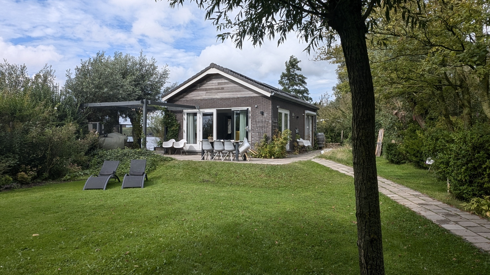
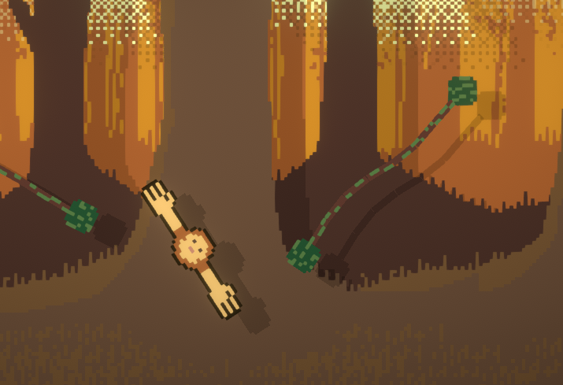
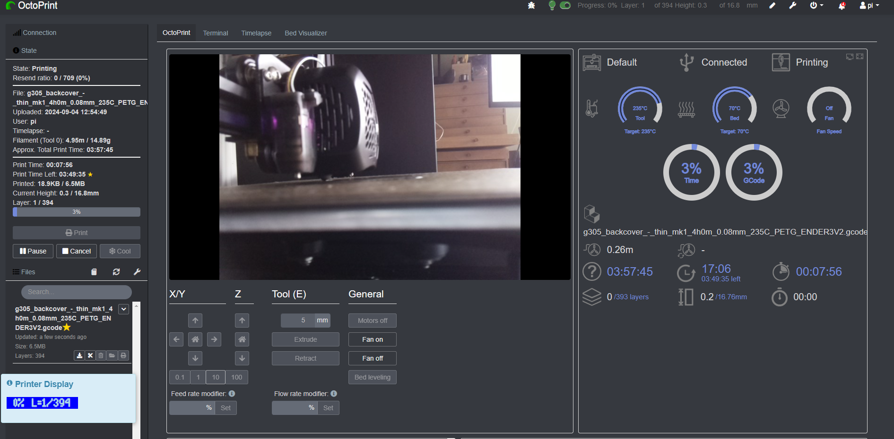

Mijn woonplaats
Ik woon in een klein huisje aan de Mooie Nel,
samen met mijn broer, zus en moeder.
We wonen in het dorpje Spaarndam.
Ik ga graag kanoën op dit prachtige meer.

mijn huis

uitzicht
Hobby’s
3D modeleren en 3D printen zijn mijn grootste hobby’s. graag maak ik zelf modellen op me laptop en maak ik ze daarna een realiteit. Dit doe ik met Pla en PETG
Wat kan ik al
Ik doe al 6 jaar, sinds 2018 aan programmeren in game engines zoals Unity met C# en Godot.
Dit heb ik allemaal mezelf geleerd met proberen en falen.
Ik heb vooral veel projecten begonnen en weinig afgemaakt.
een paar van deze projecten zijn te spelen in je browser op itch.io
https://nikkcc.itch.io/

Eerste game

zelf host ui voor printer
Mijn top 10 Projecten
- 1. Eigen telescoop gemaakt
- 2. Game voor game jam
- 3. UI voor 3D printer aansturen
- 4. Sterken deurklippen gemodelleerd en geprint
- 5. Alle modellen die ik heb geüpload naar Printables
- 6. Eigen database gemaakt
- 7. App voor home control thuis
- 8. Smart surround sound room geprogrammeerd
- 9. Minecraft server
- 10. Mee aan een game jam gedaan met team